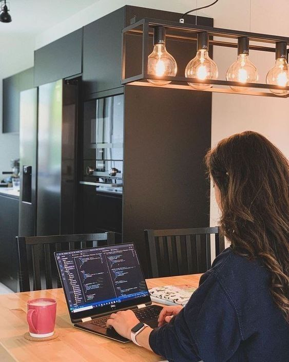

AI Researcher & Creative Developer
Men haqimda
Ilmiy ishlarim
Modelni sinash
Bog'lanish
Ushbu maqolada SI texnologiyalarining ma'lumotlar bazasini boshqarishdagi o'rni tahlil qilingan.
II Respublika ilmiy-amaliy anjumani materiallar to'plami uchun tayyorlangan maqola.
AI texnologiyalarining 2030-yilgacha bo'lgan rivojlanish yo'li va jamiyatga ta'siri haqida ilmiy tahlil.
Ushbu maqolada Teachable Machine yordamida tasvirlarni tanib olish modellarini yaratish jarayoni yoritilgan.
Modelni ishga tushirish uchun yoqish tugmasini bosing: